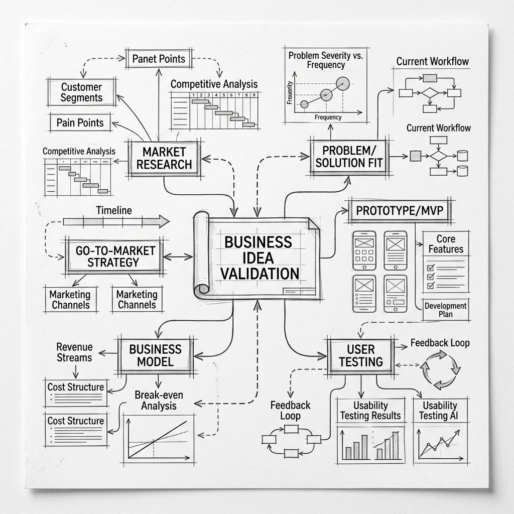
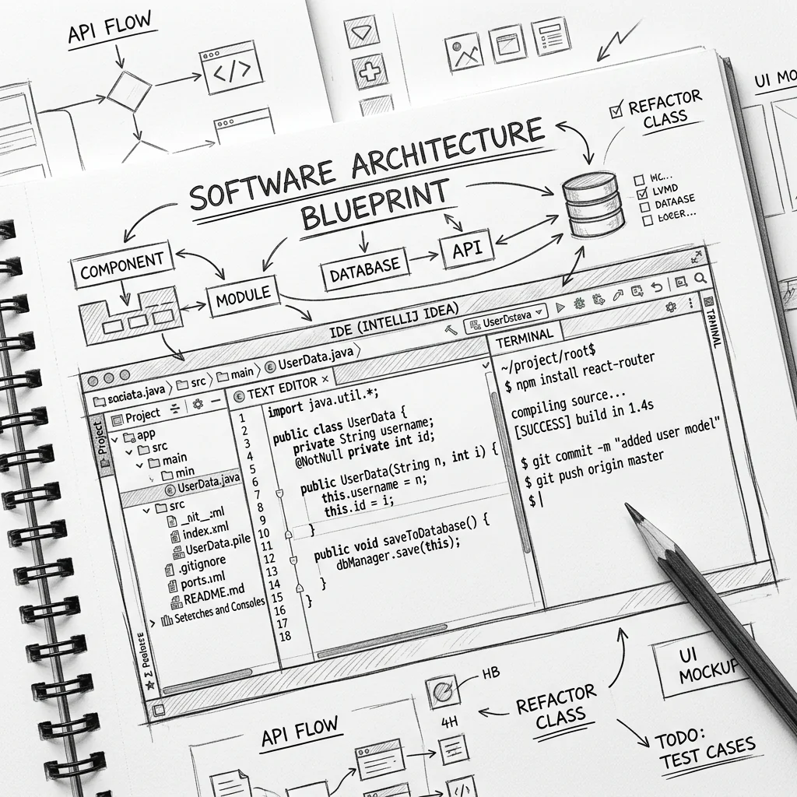
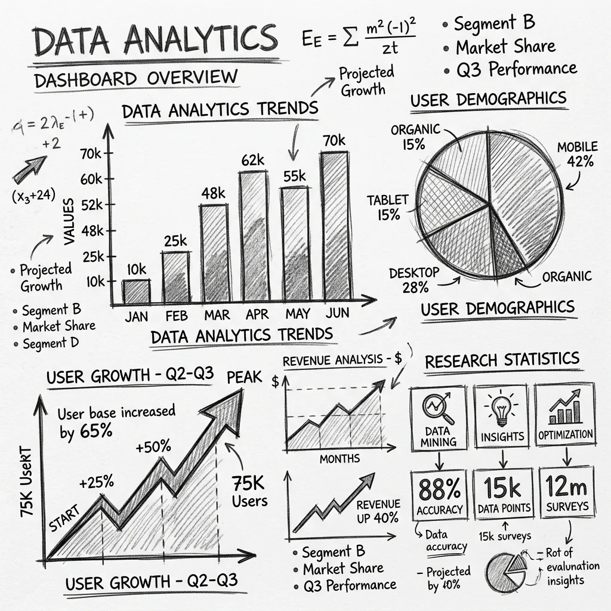
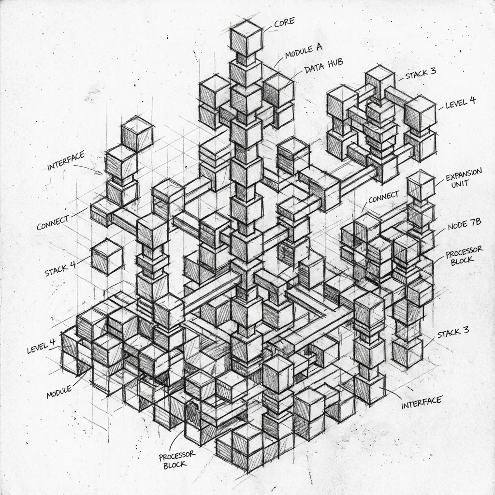

01
AI PoC・プロトタイプ開発
AIアイデアを動く形にし、技術・業務の両面から本番化を判断します。
- ・ 検証条件の設計
- ・ 本番接続を見据えた検証実装
- ・ 実データ評価
- ・ 本番化判断
SERVICES
「AIを導入したい」だけでは、必要な開発は決まりません。
現在の課題と検証段階に合う入口から、実運用まで設計します。

解決する業務と、検証で
確かめる条件を整理します。

必要な利用フローから、
動く形に実装します。

実際のデータと利用者の反応から、
効果と課題を確認します。

検証結果をもとに改善し、
運用できる範囲へ広げます。
AIアイデアを動く形にし、技術・業務の両面から本番化を判断します。
手作業と例外処理を整理し、AIと業務システムで運用できる仕組みに変えます。
社内データ、権限、確認フローまで含め、現場で使える生成AIを構築します。